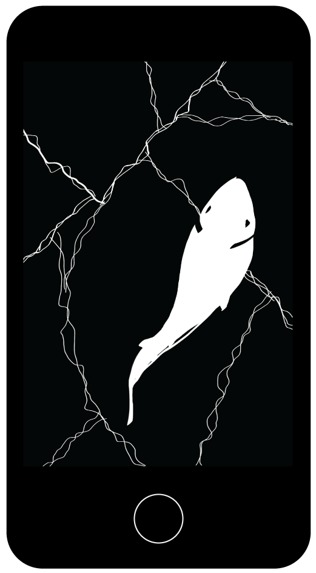
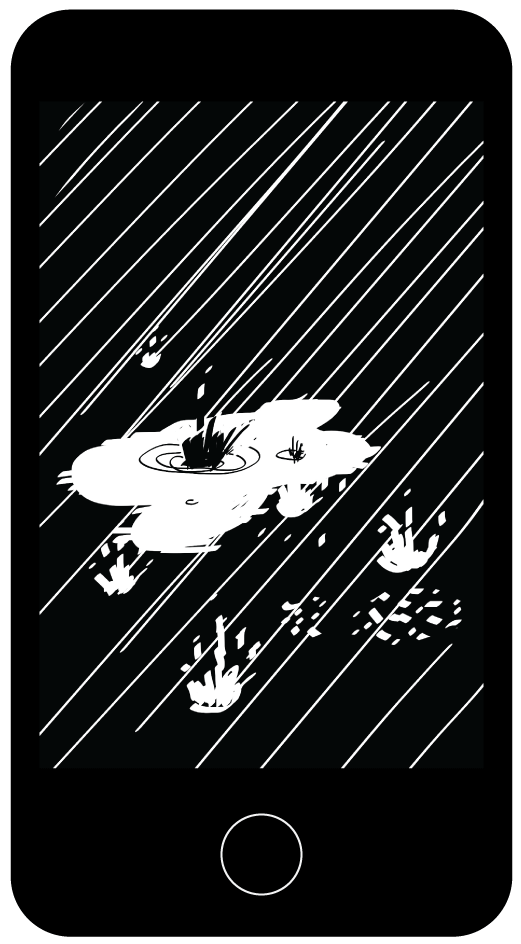
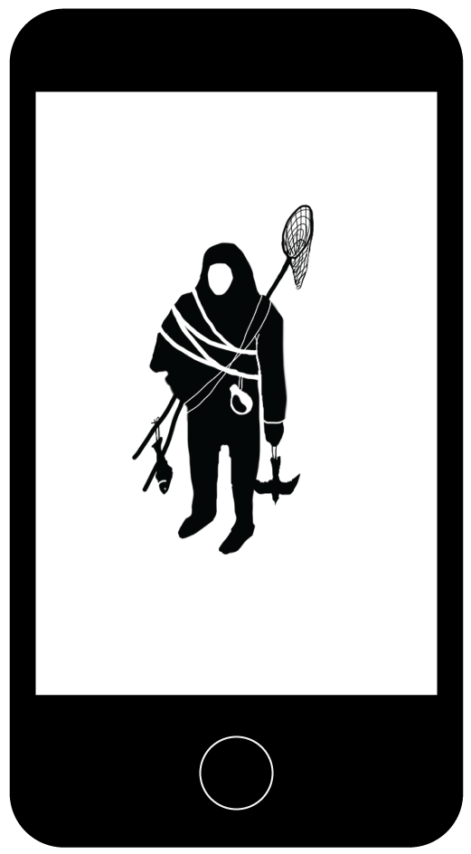
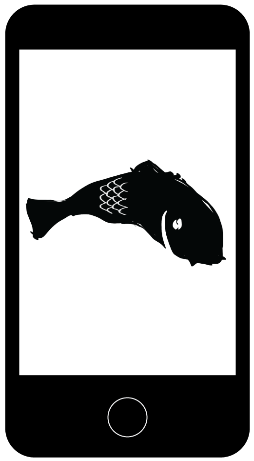
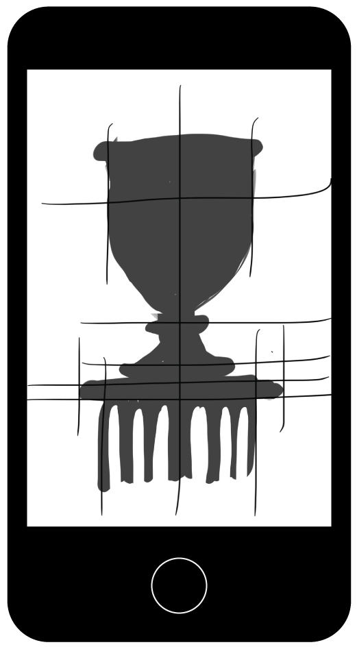
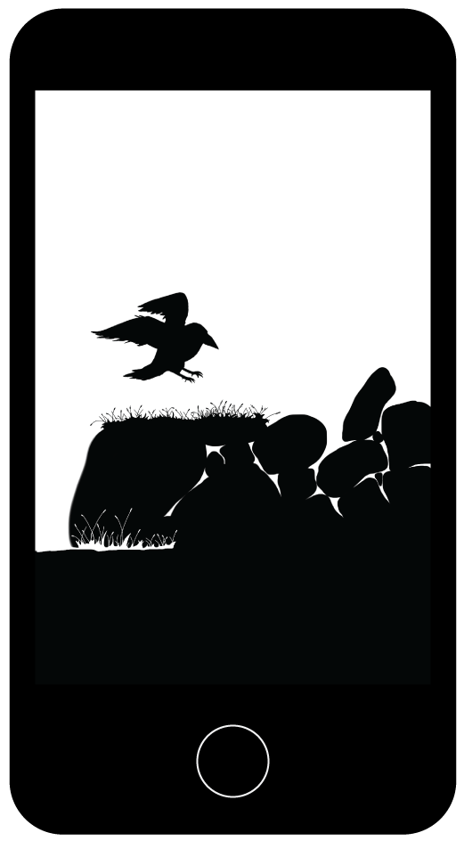

Not having brought a computer with me on vacation this fall, I did something else than programming for once - drawing. It turned out to be surprisingly easy and pleasant to draw on a phone. Some took hours, others minutes. They were drawn on the Faroe Islands between hikes - hence the concentration of fish birds and rain. There is also a huntsman. I read in the guidebook that the Faroese word for a real man is someone-who-gathers-food.





